This test service simulates machine-to-machine communication and returns client tokens that are used.

Usage
Local testing
Download the docker image
docker pull ghcr.io/onecx/onecx-test-oidc:main-nativeStart docker container
docker run --rm -p 8080:8080 \
-e TKIT_LOG_JSON_ENABLED=false \
-e QUARKUS_OIDC_CLIENT_AUTH_SERVER_URL=https://keycloak:8080/realms/test \
-e QUARKUS_OIDC_CLIENT_CLIENT_ID=client-id \
-e QUARKUS_OIDC_CLIENT_CREDENTIALS_SECRET=client-secret \
-e QUARKUS_OIDC_AUTH_SERVER_URL=https://keycloak:8080/realms/test \
ghcr.io/onecx/onecx-test-oidc:main-nativeEnvironment variables:
-
TKIT_LOG_JSON_ENABLED - determine whether to enable the JSON console formatting extension, which disables "normal" console formatting. Link
-
QUARKUS_OIDC_CLIENT_AUTH_SERVER_URL - The client base URL of the OpenID Connect (OIDC) server for client. Link
-
QUARKUS_OIDC_CLIENT_CLIENT_ID - A unique OIDC client identifier. Link
-
QUARKUS_OIDC_CLIENT_CREDENTIALS_SECRET - The client secret. Link
-
QUARKUS_OIDC_AUTH_SERVER_URL - The base URL of the OpenID Connect (OIDC) server. Link
To get the client token, run the appropriate command
curl http://localhost:8080/test/oidc/client